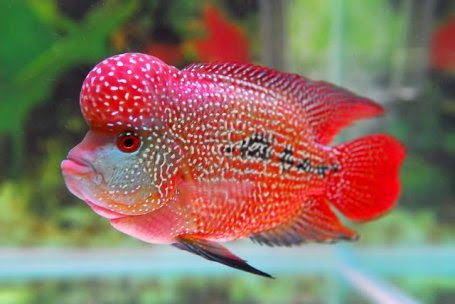

Ikan Louhan pernah menjadi primado, naik daun, serta hits (populer) pada eranya, yaitu di tahun 2000 – an, hingga para pecintanya tak segan mengeluarkan uang dari kantongnya dengan harga ratusan ribu hingga puluhan juta demi meminang satu ekor ikan louhan. Kendati saat ini ikan louhan tak seternar pada waktu jaman jayanya dulu, namun ikan ini tetap menjadi daya tarik tersendiri bagi peminatnya. Tak jarang ikan ini masih banyak yang mencari untuk digunakan sebagai ikan hias atau pun ikan pembawa keberuntungan.

Langkah pertama cara budidaya ikan louhan ialah menyiapkan akuarium dan tentunya bersama perlengkapannya. Sediakan akuarim dengan ukuran lebaranya kurang lebih 40 cm, sedangkan panjangnya yaitu 70 cm, dan untuk tingginya kurang lebih 40 cm. Ukurannya bisa saja disesuaikan kebutuhan Anda, ukurannya lebih besar dari yang sudah disebutkan tadi malah lebih baik.
Setelah akurium siap digunakan, sediakan peralatan penunjang lainnya ke dalam tempat berkembang calon ikan louhan Anda supaya nyaman untuk berkembang biak, berikut diantaranya :
1. Lampu UV, lampu berguna sebagai pencahayaan, serta mengatur kebutuhan cahaya dalam kolam menjadi terpenuhi.
2. Filter, alat ini menjadi penting karena menjadi penyaring air dan bertugas mengontrol keberisihan kolam supaya tetap terjaga.
3. Aerator, selain filter aerator juga mempunyai pernan fital dalam akurium. Alat yang kerap disebut juga sebagai pencipta gelembung udara ini berperan dalam mengatur kadar oksigen di dalam akurium.
4. Bebatuan serta tanaman air, ciptakan suasana akuarium menyerupai tempat tinggal di habitat asli ikan louhan. dengan menambahan bebatuan dan tanaman air.
Cara budidaya ikan louhan di akurium selanjutnya adalah menyiapkan air. Jangan asal memberikan air ke dalam akurium, karena di setiap daerah memiiki kadar pH berbeda-beda. Sebaiknya cek kadar potensial Hidrogen (kepanjangan dari kadar pH), atau bisa menggunakan cara memberikan air endapan terlebih dahulu.
Cara pemberian air endapan sangat mudah semudah cara budidaya ikan louhan cencu, yaitu dengan hanya memberikan air kedalam akurium selama kurang lebih satu hari. Langkah ini berguna mengatur kadar pH dalam akurium. Bila dalam waktu sehari di rasa cukup lama, bisa juga menggunakan larutan trisufat 5 ppm, atau dengan menggunaan garam khusus ikan hias. Untuk kadar pH normal dalam air untuk tempat tinggal ikan louhan yaitu antara 6,5 hingga 7,5.
Setelah kadar pH sudah siap, penting kiranya mengatur suhu air dalam akuarium agar ikan merasa aman dan mejadi nyaman saat berada di tempat barunya. Untuk menjadi perhatian, suhu nyaman ikan louhan yaitu antara 32 derajat celsius hingga 35 derajat Celsius.
Pemberian makan menjadi hal penting dalam proses pembudidayaan ikan louhan, di harapkan untuk tak memberikan pakan sembarangan, di sarankan menggunakan pakan berkualitas agar mendapatakan ikan berkualitas pula. Sebab salah satu faktor yang mempengaruhi keberhasilan budidaya ikan louhan berada pada pemberian pakan, khususnya pada usia 2 minggu sebelum ikan akan di budidayakan.
Untuk pemberian pakan yang disarankan ialah jenis pakan alami, misalnya jangkrik, udang kecil, dan cacing sebab makanan itu mengandung nilai gizi yang sangat baik bagi ikan louhan. Selain memberikan pakan alami, juga penting untuk tidak memberikan pakan buatan karena biasanya makanan ikan itu memiliki kkandungan zat pewarna atau pelet yang berbahaya bagi kesuburan ikan.
Sebelum mendapatkan ikan louhan berkualitas, memilih indukan berbobot tak bisa di lewatkan. Sebab, kualitas anakan ikan sangat di pengaruhi oleh indukannya yang tentunya berkualitas pula. Cara mendapatkan indukan berkualitas sangat mudah jauh lebih mudah ke timbang cara budidaya cacing sutra tanpa lumpur, yaitu cukup membeli ikan louhan berharga mahal (tentunya sudah memperhatikan banyak faktor-faktor), langkah ini juga akan menjadi menguntungkan bila indukan hendak di jual kembali.
Untuk mendapatkan indukan berkualitas perlu kiranya memperhatikan ciri-cirinya, berikut penjelasan singkatnya, antara lain :
1. Anggota tubuhnya lengkap dan tak memiliki tubuh yang cacat serta bengkok.
2. Memiliki jenong, sebab ikan louhan tanpa jenong itu bukan lah ikan louhan.
3. Ikan sudah memiliki tanda jenong di bagian kepala saat berukuran kurang lebih 10 cm, serta sudah tampak corak mutiara pada bagian jenongnya.
Proses perkawinan kurang lebih terjadi dalam waktu 1 hingga 2 hari, setelah itu telur akan mulai terlihat pada bagian bawah akurium. Tidak semua telur behasil di buahi, untuk itu perhatikan telur yang gagal dibuahi, dengan ciri berwarna putih menyerupai susu. Sedangkan telur sempurna di tandai dengan berwarna bening dengan bintik hitam.
Setelah telur keluar biyarkan indukan ikan tetap ada di akurium, sebab keduanya akan memberikan sirkulasi pada telurnya dengan cara mengipasi dengan siripnya, dan jangan lupa untuk tetap memberikan makan. Setelah waktu berjalan kurang lebih 48 jam atau 2 hari, telur akan mulai menetas. Sebaiknya memindahkan indukan ikan louhan dari telurnya ke tempat berbeda agar tak mengancam keberlangsungan hidup anakannya.
sumber : ilmubudidaya.com
Leave a comment